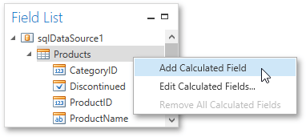
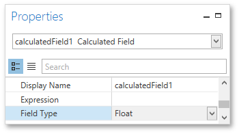
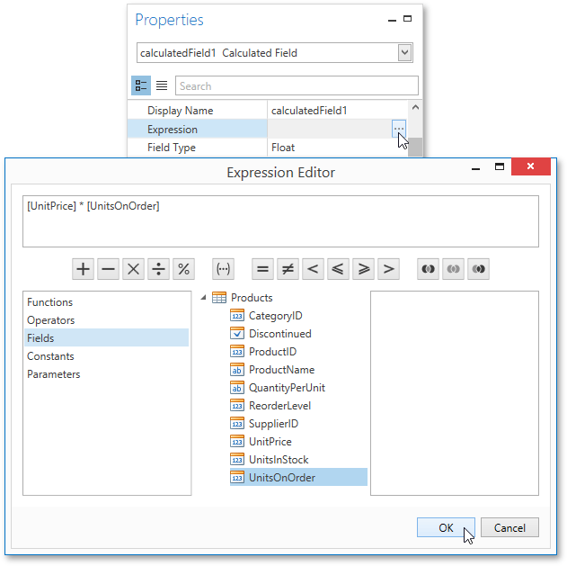
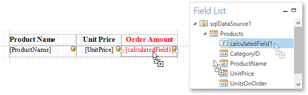
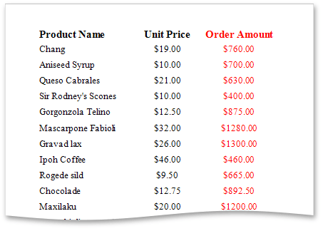

Calculated Fields
This document demonstrates how to add a calculated field to a report. The main purpose of calculated fields is to perform pre-calculations of virtually any level of complexity over data fields based on a specific expression.
In the Report Designer, a calculated field is similar to an ordinary data field (e.g., you can bind controls to it, and group, sort and filter your report against it).
To add a calculated field to your report, follow the instructions below.
To create a calculated field, in the Field List, right-click any item inside the data source, and in the invoked menu, select Add Calculated Field.

In the Field List, select the created field and switch to the Properties Panel. Make sure to change the Field Type property to an appropriate value.

Then, create an expression for the calculated field.
Click the ellipsis button for the Expression property to invoke the Expression Editor. You can also invoke this dialog by right-clicking the calculated field within the Field List and selecting Edit Expression...

Click Fields to see the field list. To add a data field or report parameter to this expression, double-click the required name. A data field is inserted into the expression's text using its name in [square brackets], and parameters are inserted using the "Parameters." prefix before their names. Use the toolbar to add operators between field names.
To close the dialog and save the expression, click OK.
Finally, drag the calculated field from the Field List onto the required band like an ordinary data field.

The report with a calculated field is now ready. Switch to the Print Preview tab and view the result.
